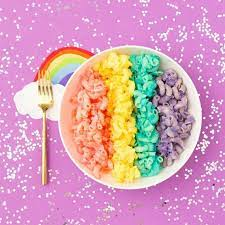

Rainbow Mac N Cheese

This Rainbow Mac N Cheese Recipe Blow Your Mind
Forget about the typical yellow mac n cheese. Spark up your life with some color with this rainbow mac n cheese recipe!
Ingredients
- Box of elbow macaroni
- 5 Tbsp of butter
- 3 cups of milk
- 1 Tbsp of salt
- 2 cups of cheddar cheese
- 1 cup Monterey jack cheese
- 1/2 cup Parmesan cheese
- 1/4 cup of flour
- Food coloring
Instructions
- Mix butter, milk, cheese, flour, and salt in a pot. Let it melt over medium heat. Stir constantly to avoid burning.
- Pour melted cheese into four small containers and add in food colorin. Stir until combined.
- Cook macaroni and then divide evenly into the four seperate cheese sauce bowls. Toss the macaroni in the cheese until fully coated.
Return to main page